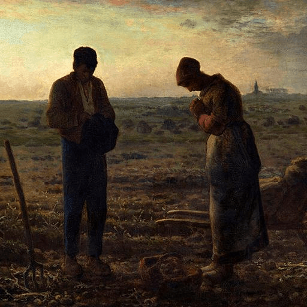

Hexagram 15 – Qian_modest: Quiet Humility
Upper: Earth (☷) · Lower: Mountain (☶)

Core Meaning
A mountain hidden beneath the earth represents strength without display. Even when you have achieved a great deal, humility protects you from needless resistance. You do not need to boast or claim every credit. Staying grounded helps you go farther.
“I stay grounded in success and let my strength speak without display.”
Blessing
May you keep a humble heart and earn respect without needing to seek attention.
Guidance by Life Area
Love
Relationships feel better when neither person needs to prove their position. Listen more, keep less score, and let mutual respect carry more weight than being right.
Listen before insisting on who is right:
- Take responsibility for your own emotions.
- Offer presence before advice.
Career
Your recent performance may be strong, which makes staying low-key even more useful. Share credit with the team and avoid drawing unnecessary resistance through self-promotion.
Share credit with the team:
- Stabilize results before promoting them widely.
- Ask, listen, and learn from others.
Health
Listen to your body instead of trying to prove toughness. Rest when you are tired and adjust the pace when needed.
Rest when tired instead of forcing through it:
- Respect your limits and adjust the pace.
- Favor consistency over perfection.
Finances
Keep finances steady and understated. Real security does not need to be displayed. Continue building without spending for status.
Keep financial success low-key:
- Spend for real needs, not appearances.
- Keep building steadily over time.
Relationships
A humble manner opens many doors. You do not need to be first or know everything; recognize other people's strengths and admit what you still have to learn.
Praise other people's strengths sincerely:
- Admit when you do not know something.
- Let others go first when it costs you little.